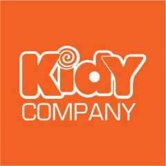
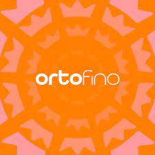

Essa história começou lá em 1983, fruto de um grande sonho, do desejo de criar uma empresa diferente de tudo que existia no mercado de calçados até então. Os sapatos tinham que acolher os pés das crianças como se fossem um abraço de mãe, um carinho de pai.
Essa história começou lá em 1983, fruto de um grande sonho, do desejo de criar uma empresa diferente de tudo que existia no mercado de calçados até então. Os sapatos tinham que acolher os pés das crianças como se fossem um abraço de mãe, um carinho de pai.
O nome Klin e uma versão do “Clear” no inglês, que traduzindo ficaria limpo ou puro, O Mascote da marca também recebe o nome Klin, mas esses todos conhecem, um cachorro para lá de simpático e que aparece sempre em nossas redes sociais, nos eventos e em alguns encontros. Ele leva a fantasia e a imaginação da infância para os nossos calçados e está sempre pertinho das crianças.
R. Ver. José Fiorin, 373 - Vila Angelica, Birigui - SP, 16200-297
 Os calçados Adrun tem desde o início uma equipe de desenvolvimento focada em produzir modelos com conforto, leveza e flexibilidade. A Empresa foi fundada em junho de 1991 e em pouco tempo foi ganhando envergadura, atuando no mercado como uma empresa sólida, sendo conhecida principalmente por sua excelência em qualidade.
Os calçados Adrun tem desde o início uma equipe de desenvolvimento focada em produzir modelos com conforto, leveza e flexibilidade. A Empresa foi fundada em junho de 1991 e em pouco tempo foi ganhando envergadura, atuando no mercado como uma empresa sólida, sendo conhecida principalmente por sua excelência em qualidade.
Hoje ela esta presente em mais de 60 países, o objetivo da marca é sempre estimular pessoas a terem uma vida saudável através de exercícios físicos.
Av. Henrique Fernandes, 205 - Bosque da Saude, Birigui - SP, 16200-385
 Jet Kids é mais do que uma marca de calçados infantis; somos uma família comprometida em criar um futuro onde as crianças crescem felizes, saudáveis e cheias de estilo.
Jet Kids é mais do que uma marca de calçados infantis; somos uma família comprometida em criar um futuro onde as crianças crescem felizes, saudáveis e cheias de estilo.
Com valores fundamentados na honestidade, comprometimento, confiança e espírito de equipe, acreditamos que nossa missão seja deixar um legado de amor, cuidado e resiliência, impactando positivamente a vida de inúmeras pessoas e contribuindo para um mundo onde todos possam prosperar.
R. Gumercindo Pereira das Chagas, 484 - Parque das Nacoes, Birigui - SP, 16201-180

Nós somos a Kidy, indústria de calçados. Uma empresa dedicada à saúde e conforto dos pés das crianças desde 1990, criando calçados com estilo e qualidade.
Nossos pilares são a Saúde e Conforto, Tecnologia, Inovação e a Diversão!
Buscamos sempre ser a marca parceira do lojista e com foco no andar saudável das crianças, no diálogo com pais e mães, tios e tias.
Ainda, fazendo a diferença para as pessoas de nossa cidade, de nosso país, trabalhando para fazer desse nosso mundo um lugar melhor para se viver!
Nossos pilares são a Saúde e Conforto, Tecnologia, Inovação e a Diversão!
Buscamos sempre ser a marca parceira do lojista e com foco no andar saudável das crianças, no diálogo com pais e mães, tios e tias.
Ainda, fazendo a diferença para as pessoas de nossa cidade, de nosso país, trabalhando para fazer desse nosso mundo um lugar melhor para se viver!
Av. Achelino Moimaz, 511 - Cidade Jardim, Birigui - SP, 16203-125
 Desde 1986 produzindo calçados em Birigui-SP, o crescimento da fábrica Pé com Pé foi marcado por investimentos em tecnologia e qualidade, contribuindo para que a cidade se tornasse o maior polo calçadista infantil do Brasil.
Desde 1986 produzindo calçados em Birigui-SP, o crescimento da fábrica Pé com Pé foi marcado por investimentos em tecnologia e qualidade, contribuindo para que a cidade se tornasse o maior polo calçadista infantil do Brasil. Atualmente, a estrutura da empresa tem mais de 10 mil m², empregando mais de 500 colaboradores e produzindo até 7 mil pares de calçados infantis por dia.
Desta maneira, a cada ano a Pé com Pé prossegue atingindo o seu maior objetivo: manter vivo o encanto de ser criança.
R. Manoel Cottas Azevedo, 71 - Jardim Klayton, Birigui - SP, 16203-041

Com muito amor envolvido os calçados Ortofino são tradicionalmente fabricados utilizando técnicas artesanais, com materiais Premium, não alérgicos e inspecionados que garantem o total conforto para nossos príncipes e princesas.
Nosso amor por crianças é nossa grande fonte de inspiração, e impulsiona continuamente nossa paixão pela qualidade, focamos também na funcionalidade de nossos produtos; nós nos preocupamos com nossos anjinhos, portanto, nos dedicamos a fabricar calçados fáceis de calçar, macios e flexíveis que abraçam os pezinhos dos pequenos, trazendo muito mais conforto e mobilidade.
Nós da Ortofino estamos orgulhosos em poder possibilitar momentos inesquecíveis ao seu príncipe ou princesa, e essa paixão continuará sendo nossa inspiração para as próximas décadas.
Nosso amor por crianças é nossa grande fonte de inspiração, e impulsiona continuamente nossa paixão pela qualidade, focamos também na funcionalidade de nossos produtos; nós nos preocupamos com nossos anjinhos, portanto, nos dedicamos a fabricar calçados fáceis de calçar, macios e flexíveis que abraçam os pezinhos dos pequenos, trazendo muito mais conforto e mobilidade.
Nós da Ortofino estamos orgulhosos em poder possibilitar momentos inesquecíveis ao seu príncipe ou princesa, e essa paixão continuará sendo nossa inspiração para as próximas décadas.
Av. José Agostinho Rossi, 1134 - Jardim Pinheiros, Birigui - SP, 16203-059
No início, os sócios, que são casados, tiveram dificuldades para dar pulso ao empreendimento, pois cada um dedicava-se a uma profissão diversa da relacionada a confecção de calçados infantis.
Colli era gerente de banco e sua mulher farmacêutica, ambos em Piracicaba (SP).
Quando a empresa começou a ganhar forças o casal fixou domicílio em Birigui, concentrando suas atividades na fábrica e formando uma história de vida paralela e voltada à história e ao percurso da empresa Pampili.
Rua 21 De Abril, 640 - Vila Xavier, Birigui - SP, 16203-902
A Plugt é uma empresa especialista em fabricação de calçados infantis injetados. O material que utilizamos é o PVC Microexpandido que além de leve, confortável, FÁCIL DE LAVAR, ainda é RECICLÁVEL (o que conseguimos fazer desde o processo produtivo até após o uso - um processo amigo do meio ambiente).
Sempre nos inspiramos no poder da imaginação das crianças para criar produtos divertidos e coloridos assim como a Plugt é! Ah, e sem deixar de lado o conforto, a praticidade de calce e a facilidade em lavar que as mamães amam! Fabricamos calçados do 19/20 até o 41/42 e somos signatários da Agenda ONU 2030.
Sempre nos inspiramos no poder da imaginação das crianças para criar produtos divertidos e coloridos assim como a Plugt é! Ah, e sem deixar de lado o conforto, a praticidade de calce e a facilidade em lavar que as mamães amam! Fabricamos calçados do 19/20 até o 41/42 e somos signatários da Agenda ONU 2030.
R. Silvio Viêira Coelho, 804 - Centro, Birigui - SP, 16200-073
A cada dia a Worldcolors se transforma para, cada vez mais, levar COR E ALEGRIA às vidas de meninas sonhadoras, conectadas, cheias de atitude, que valorizam a família e as amizades, e que também estão em constante transformação. Atualmente a empresa conta com centenas de colaboradores altamente capacitados e que estão sempre em busca do aperfeiçoamento de suas habilidades com o objetivo de criar produtos encantadores e que fazem parte do dia a dia das meninas.
Nosso compromisso com a excelência nos motiva a pesquisar e aperfeiçoar continuamente os conceitos de moda, anatomia, flexibilidade e conforto na elaboração das matérias-primas e testes dos produtos e serviços. Com experiência de vendas em mais de 40 países, estamos preparados para atender clientes de pequeno, médio e grande porte, oferecendo sempre um mix inteligente de produtos e serviços.
Nosso compromisso com a excelência nos motiva a pesquisar e aperfeiçoar continuamente os conceitos de moda, anatomia, flexibilidade e conforto na elaboração das matérias-primas e testes dos produtos e serviços. Com experiência de vendas em mais de 40 países, estamos preparados para atender clientes de pequeno, médio e grande porte, oferecendo sempre um mix inteligente de produtos e serviços.
R. Profa. Stela Affini Gajardoni, 1010 - Fundos - Jardim Jussara Maria, Birigui - SP, 16204-012
A Pequito é uma empresa especializada em Calçados Infantis que atua no mercado nacional desde 1979. Nosso principal objetivo é proporcionar aos pequenos produtos de qualidade e conforto, com foco em novidades que estão ligadas nas últimas tendências. Há 44 anos calçando gerações.
R. Marco Boteon, n° 131 - Jardim Sao Cristovao, Birigui - SP, 16200-372